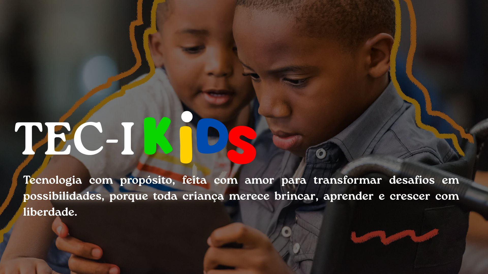

Galeria TecIKids



Inclusão, acessibilidade e inovação para todas as crianças.
Promover a inclusão infantil através da tecnologia, oferecendo soluções assistivas inteligentes, seguras e acessíveis para apoiar o desenvolvimento de crianças com deficiência.
Criamos produtos assistivos, aplicativos educacionais e ferramentas personalizadas para facilitar o aprendizado, a autonomia e a comunicação de cada criança, respeitando suas necessidades individuais.
Projetos focados em acessibilidade.
Aplicativos que estimulam autonomia.
Feitos sob medida para cada criança.
Aprendizado por meio da tecnologia.
Para escolas e profissionais.
A TecIKids tem como propósito transformar a infância de crianças com deficiência através da tecnologia, criando meios que facilitem o aprender, o comunicar e o conviver de forma mais autônoma e humana.